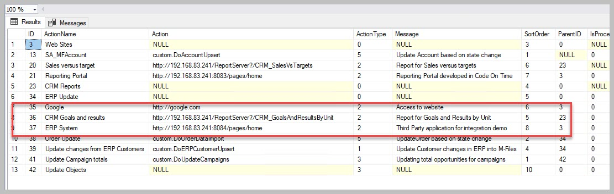
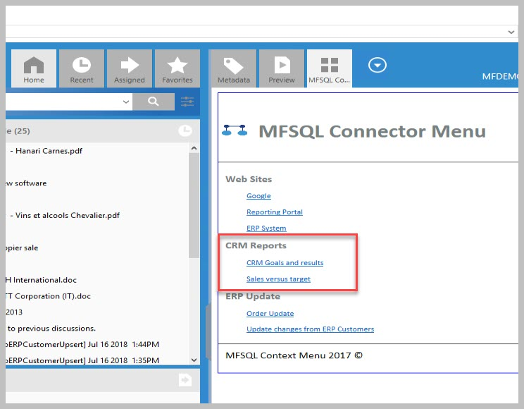

Near real time reporting¶
This use case highlight how to setup a report with near real time data in M-Files. This is particularly relevant where the data from M-Files objects are used for ongoing performance management or monitoring of progress.
The illustration use the following: M-Files is used for case management in a high performance environment. Many new cases are reported every day and requires management of progress based on key performance areas and strict rules for excessive waiting time.
One of the key requirements is to have have the status of cases in the system and allocation of cases to workstreams available to team managers to allow them to identify bottlenecks and re-allocate work where necessary. M-Files has been fine tuned to optimise the recording of the cases and to control the different steps of work through workflow and routing the cases to different teams based on the type of case.
What is left, is to get a nice report on demand for the team managers to show the results. With some 200 000 cases in the system and several 100 cases open at any point of time, it is not feasible to use the standard reporting module.
MFSQL Connector has come into play because:
Only changed data can be downloaded instead of all data
Updating of data can be triggered on demand, or automatically using an event handler
A SQL view prepare the data for the report to the team managers.
Security allows only the team managers to access the report from within M-Files
The following parts of MFSQL Connector is deployed
Install and setup SSRS (SQL Reporting Services) to serve as the report server
Create class tables for the cases, employees, and work orders (spMFCreateTable)
Build the update from M-Files to SQL into a store procedure using the Context Menu special parameters to pass through the objid of the record to be updated. (spMFUpdateTable)
Add a task record in the Context Menu table to allow for a event handler action to be passed through to SQL (MFContextMenu, spMFContextMenuActionItem)
Add a task and menu record in the Context Menu table to allow for linking to a report (MFContextMenu, spMFContextMenuActionItem, spMFContextMenuHeadingItem)
Add after check in changes event handler, add VB snippet in the event handler script.
Pull data for class tables to get base data (spMFUpdateTable)
Create a SQL view for reporting the case statistics (open cases by state by team)
Use Visual Studio Report Designing to create a static report based on the view and publish to SSRS
The end result should be the ability to make a change in M-Files on cases. this will auto update in SQL. The team manager can use the Context Menu in M-Files to access the report.
Note that there are alternative methods also for the updating of the records into SQL, depending on the volume of changes.
Store procedure snippets for using the Context Menu special parameters for a asynchronous action triggered by a event handler
The sample script CMDoObjectActionForWorkflowState can be used as a starting point to build the event handler update procedure. The call from the event handler will pass through all the details of the object that has been checked in.
Alter PROCEDURE [Custom].[CMDoObjectActionForWorkFlowState]
@ObjectID INT
, @ObjectType INT
, @ObjectVer INT
, @ID INT
, @OutPut VARCHAR(1000) OUTPUT
, @ClassID int
AS
BEGIN
All that is remaining is to update the object from M-Files to SQL asynchronously. Note that a single objid is passed through to the update statement.
EXEC [dbo].[spMFUpdateTable]
@MFTableName = @MFClassTable ,
@UpdateMethod = 1,
@ObjIDs = @ObjectID ,
@Update_IDOut = @Update_ID OUTPUT ,
@ProcessBatch_ID = @ProcessBatch_ID ,
@Debug = 0 -- smallint
Refer to the section on setting up the context menu for the script to be added in the event handler Using the Context Menu. Use the action type 5 VB script.
Below is the sample script for adding the action in the context menu for the event handler action
EXEC [dbo].[spMFContextMenuActionItem]
@ActionName = 'CaseUpdate_EventHandler' ,
@ProcedureName = 'Custom.DoCaseUpdate',
@Description = 'Update cases using event handler',
@RelatedMenu = 'Asynchronous Actions',
@IsRemove = 0,
@IsObjectContext = 1,
@IsWeblink = 0,
@IsAsynchronous = 1,
@IsStateAction = 1,
@PriorAction = null,
@UserGroup = 'Team Managers',
@Debug = 0
Example of the Context Menu entries for a SSRS report

Example of the action menu item on context menu to open the report
